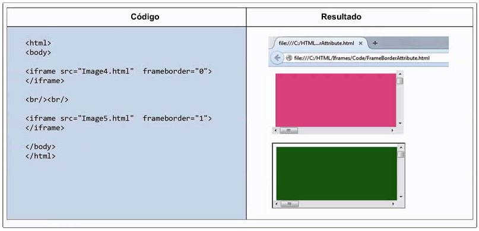

HTML
Las siglas HTML vienen de “Hyper Text Markup Language” o Lenguaje Marcado de Hipertexto. Los códigos HTML son el lenguaje universal que se utiliza para crear y dar formato a los sitios web. Funcionan en cualquier sistema operativo (Windows, Mac, Linux, etc.) y con cualquier navegador (Chrome, Explorer o Mozilla). Aunque no se trata de un lenguaje de programación muy sofisticado, saber manejar HTML te permite insertar otros códigos más potentes. Etiquetas HTML. El lenguaje HTML está conformado por un sistema de etiquetas en serie o tags, que incluyen instrucciones que los navegadores traducen como:
Imágenes
Texto
Hipervínculos
Listas de palabras
Tablas, etc.
Así, para que un elemento de este tipo pueda ser leído, la etiqueta debe tener dos partes: una etiqueta de inicio () y una de cierre () entre guiones (< >). Referencias
Bravo, A. R. (2019). 10 códigos HTML básicos para páginas web (con ejemplos).
Obtenido de https://co.godaddy.com/blog/10-codigos-html-para-paginas-web-y-para-que-sirven/

Delgado, H. (2019). iframe HTML - Cómo mostrar una página externa dentro de HTML. Obtenido de https://disenowebakus.net/iframe.php
CSS
CSS es el segundo lenguaje más básico y esencial para crear páginas web. El primero sería HTML, con el que se define el contenido de la página. El segundo CSS, con el que se define la parte de la presentación, es decir, cómo deben mostrarse los elementos de la página, su posición, forma, espaciados, colores y en resumen, toda la parte estética.
CSS es un lenguaje que consiste en una serie de elementos mediante los cuales se declaran los estilos, básicamente éstos son los más importantes:
• Selectores, mediante los cuales podemos especificar qué elementos de la página nos estamos refiriendo
• Atributos de estilo para definir qué cosas queremos estilizar sobre los selectores indicados
•Una serie de valores, que indican qué estilo se debe aplicar a cada atributo sobre cada selector. Los valores se expresan con unidades CSS, que sirven para cuantificar los valores (píxeles, puntos...)
Aprender CSS no es difícil, pero cuando se usa profesionalmente se deben tener en cuenta muchos detalles y buenas prácticas, como la organización del código, la reutilización, la optimización, etc. que básicamente están tratados en los manuales y artículos que encontrarás en DesarrolloWeb.
Desarrolloweb.com. (s.f.). CSS. Obtenido de https://desarrolloweb.com/home/css

Silo Creativo. (2016). Cómo se hace una web: Qué es CSS [Parte 2]. Obtenido de https://www.silocreativo.com/que-es-css/